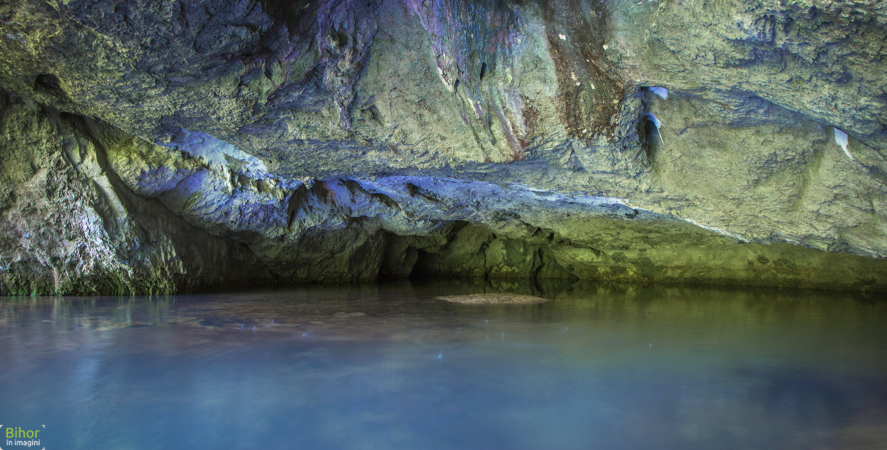

apă - Stiri online despre apă in ziarul Cuget Liber de Constanta.
 INAPOI SUS Arhivă Despre noi RSS Abonamente Publicitate Contact Ianuarie Februarie Martie Aprilie Mai Iunie Iulie August Septembrie Octombrie Noiembrie Decembrie 2006 2007 2008 2009 2010 2011 2012 2013 2014 2015 2016 2017 2018 2019 2020 L M M J V S D 1 2 3 4 5 6 7 8 9 10 11 12 13 14 15 16 17 18 19 20 21 22 23 24 25 26 27 28 29 30 Abonamente cugetliber.ro Termeni şi condiţii Politica de confidenţialitate Redacţie Social Politică-Administrație Eveniment Sport Cultură-Educație Economie Fun Ediţia 22.09.2020 RSS Titlurile zilei RSS Ultima ora
Știrile zilei de Marţi, 22 Septembrie 2020
Social Politică-Administrație Eveniment Sport Cultură-Educație Economie Fun Ediţia 22.09.2020 RSS Titlurile zilei RSS Ultima ora Social Politică-Administrație Eveniment Sport Cultură-Educație Economie Fun Arhiva de aur | Armata. Onoare şi patrie! | Auto | Sursa de Sănătate | Tehnologie | VremeaPrima pagină apă 347 de vizite Toate ştirile despre apă în ziarul Cuget Liber Online.
Apă
448 articole cu tagul " apă". Ultima ştire adaugata Marţi, 22 Septembrie 2020.Lacul Techirghiol, în pericol. „Tragem un semnal de alarmă în ce priveşte secarea lacurilor din Dobrogea!”
Lacul Techirghiol a început să sece. Fenomenul neobişnuit a fost observat de locuitori, dar şi de către reprezentanţii autorităţilor locale, care au alertat conducerea Administraţiei Bazinale de Apă Dobrogea – Litoral. Deşi ... ieri, ora 21:37 | Social |Atenție, se oprește apa în orașul Murfatlar!
Pentru executarea lucrărilor de înlocuire a unei vane, cu diametrul de 400 mm, la nivelul conductei de alimentare cu apă, de pe strada General Vasile Milea din orașul Murfatlar, RAJA S.A. este nevoită să întrerupă furnizarea apei ... 14 septembrie | Social |RAJA anunță că tariful la apă nu va fi majorat
Conducerea companiei de apă RAJA S.A. anunță că tariful la apă nu va fi majorat. Precizarea vine ca urmare a unor postări și comentarii în mediul online referitoare la creșterea cu 50% a prețurilor și tarifelor pentru serviciile ... 7 septembrie | Social |Atenție, se oprește apa în localitatea Independența!
Pentru executarea lucrărilor de înlocuire a conductei de alimentare cu apă, de pe strada Cășăriei din localitatea Independența, județul Constanța, echipele RAJA S.A. vor fi nevoite să întrerupă furnizarea apei potabile ... 24 august | Social |Mai multe străzi din Mangalia, fără apă rece
Pentru executarea lucrărilor de reabilitare a rețelei de apă potabilă și sectorizarea sistemului, prin montarea a trei vane de legătură, din municipiul Mangalia, echipele RAJA SA vor fi nevoite să întrerupă furnizarea apei ... 16 august | Social |Atenție, se oprește apa în localitățile Negru Vodă și Cotu Văii!
Pentru executarea lucrărilor de reabilitare a rețelei de la nivelul Gospodăriei de apă - Cotu Văii, din județul Constanța, realizate prin Programul Operațional Infrastructură Mare 2014 - 2020 (POIM), echipele RAJA SA vor fi ... 14 august | Social |Șase unități de învățământ din județul Constanța, fără apă curentă
Inspectorul școlar general, prof. Sorin Mihai, va supraveghea, în această perioadă, pregătirile pentru redeschiderea unităților de învățământ, pe 14 septembrie. Dacă unii directori își fac griji cu conexiunea la internet ... 12 august | Cultură-Educație |Bloc-fantomă, pe aleea Egretei. "E dezastru, nimeni nu are acte aici!"
Sute de familii, unele cu copii mici, unele cu bătrâni, trăiesc în Constanța, în plină pandemie, fără apă la robinet, fără curent electric, fără nici cele mai minime condiții de igienă. Stau înghesuiți în 10 metri ... 16 iulie | Social |Comandament pentru Situații de Urgență, la RAJA
În urma avertizările meteo de vreme instabilă și ploi torențiale, la nivelul SC RAJA SA a fost activat Comandamentul pentru Situații de Urgență. Acesta va fi funcțional până astăzi, la ora 16, în cazul în care meteorologii nu ... 7 iulie | Social |Atenție, se oprește apa pe mai multe străzi din Constanța!
RAJA S.A. va întrerupe furnizarea apei potabile, mâine, între orele 8.30 și 17.30, pentru dezafectarea conductei vechi de alimentare cu apă, cu diametrul de 100 mm, de pe strada Onești, din municipiul Constanța. Vor fi afectați de ... 29 iunie | Social |La noapte, se oprește apa în Mangalia și localitățile Limanu, 2 Mai și Vama Veche
Pentru executarea unor lucrări de reabilitare la nivelul Gospodăriei de apă - Castel Mangalia, RAJA SA va întrerupe furnizarea apei potabile în noaptea de joi spre vineri, 11 spre 12 iunie, între orele 21.00 și 6.00.În acest timp ... 10 iunie | Social |Constanța rămâne fără apă rece, la noapte
Constănțenii din mai multe cartiere vor fi lipsiți de apă rece, la noapte, timp de aproximativ opt ore.Pentru executarea lucrărilor de remediere a unei avarii pe conducta de distribuție apă potabilă, cu diametrul de 1000 mm, din ... 1 iunie | Social |Atenție, constănțeni! Mai multe zone din oraș, fără apă rece
Pentru executarea lucrărilor de remediere a unei avarii pe conducta de distribuție apă potabilă, cu diametrul de 1000 mm, din incinta Stației de Tratare și Pompare Palas, din municipiul Constanța, RAJA SA va întrerupe furnizarea ... 29 mai | Social |Nouă ore fără apă rece, în Mangalia, Limanu, 2 Mai și Vama Veche
Consumatorii din localitățile Mangalia, Limanu, 2 Mai și Vama Veche nu beneficiază de apă rece, astăzi, timp de aproximativ nouă ore. Pentru executarea unor lucrări de reabilitare la nivelul Gospodăriei de apă - Castel Mangalia ... 26 mai | Social |Mâine se oprește apa rece în Mangalia!
O parte din locuitorii municipiului Mangalia nu beneficiază de apă rece mâine, timp de câteva ore. Pentru executarea unor lucrări de reabilitare la nivelul Gospodăriei de apă - Castel Mangalia, RAJA SA va întrerupe furnizarea apei ... 25 mai | Social |Opt ore fără apă rece în localitatea Valea Dacilor
Pentru executarea lucrărilor de înlocuire a unei pompe defecte de la nivelul sursei ce asigură alimentarea cu apă a localității Valea Dacilor, din județul Constanța, RAJA SA este nevoită să întrerupă furnizarea apei potabile ... 25 mai | Social |Atenție, se oprește apa în zona Pescărie din Constanța!
Pentru executarea lucrărilor de înlocuire a unui tronson din conducta de distribuție apă potabilă, cu diametrul de 600 mm, de la intersecția bulevardului Mamaia cu aleea Studenților, în zona Pescărie, din municipiul Constanța ... 20 mai | Social |Lavoare cu apă și săpun, în zonele aglomerate din Constanța
După ce, la începutul lunii aprilie, Primăria Municipiului Constanța a amplasat în 10 zone din oraș lavoare mobile cu apă, săpun și șervețele, săptămâna aceasta, angajații Direcției Gestionare Servicii Publice au început ... 19 mai | Social |Atenție, se oprește apa în localitățile Cumpăna și Techirghiol!
Pentru executarea lucrărilor de modernizare a instalațiilor de pompare a apei din cadrul Complexului de înmagazinare, tratare și distribuție Constanța Sud, RAJA SA va întrerupe furnizarea apei potabile la noapte, începând cu ora ... 18 mai | Social |Mai multe zone din municipiul Constanța și din orașul Ovidiu, fără apă rece
Pentru executarea lucrărilor de remediere a unei avarii pe conducta de distribuție apă potabilă, cu diametrul de 600 mm, din incinta Stației de Pompare Caragea Dermen din municipiul Constanța, RAJA SA va întrerupe furnizarea apei ... 4 mai | Social | pagina precedentă 1 2 3 ... 23 pagina următoareComentează ştirea ATENŢIE : Câmpurile marcate cu * sunt obligatorii.
Cele mai accesate ştiri cu acest tag
Lacul Techirghiol, în pericol. „Tragem un semnal de alarmă în ce priveşte secarea lacurilor din Dobrogea!” Atenție, se oprește apa în orașul Murfatlar! RAJA anunță că tariful la apă nu va fi majorat Atenție, se oprește apa în localitatea Independența! Mai multe străzi din Mangalia, fără apă rece Atenție, se oprește apa în localitățile Negru Vodă și Cotu Văii! Șase unități de învățământ din județul Constanța, fără apă curentă Bloc-fantomă, pe aleea Egretei. "E dezastru, nimeni nu are acte aici!" Comandament pentru Situații de Urgență, la RAJA Atenție, se oprește apa pe mai multe străzi din Constanța! La noapte, se oprește apa în Mangalia și localitățile Limanu, 2 Mai și Vama Veche Constanța rămâne fără apă rece, la noapte Atenție, constănțeni! Mai multe zone din oraș, fără apă rece Nouă ore fără apă rece, în Mangalia, Limanu, 2 Mai și Vama Veche Mâine se oprește apa rece în Mangalia! Opt ore fără apă rece în localitatea Valea Dacilor Cuget Liber Homepage YouTube RSS Facebook Twitter Social Politică-Administrație Eveniment Sport Cultură-Educație Economie Fun Ediţia 22.09.2020 RSS Titlurile zilei RSS Ultima oraStiri
Social Politică-Administrație Eveniment Sport Cultură-Educație Economie FunServicii
Abonamente Publicitate Contact Tichete de masăInfo utile
Termeni şi condiţii Politica de confidenţialitate Politica de utilizare a Cookie-urilorWeb
Sursa de Sănătate Cuget Liber (https://www.cugetliber.ro/) foloseşte cookies pentru a imbunătăţi experienţa utilizatoriilor noştri.Află mai multe sau Sunt de acord Pagina a fost generata in 0.2241 secunde